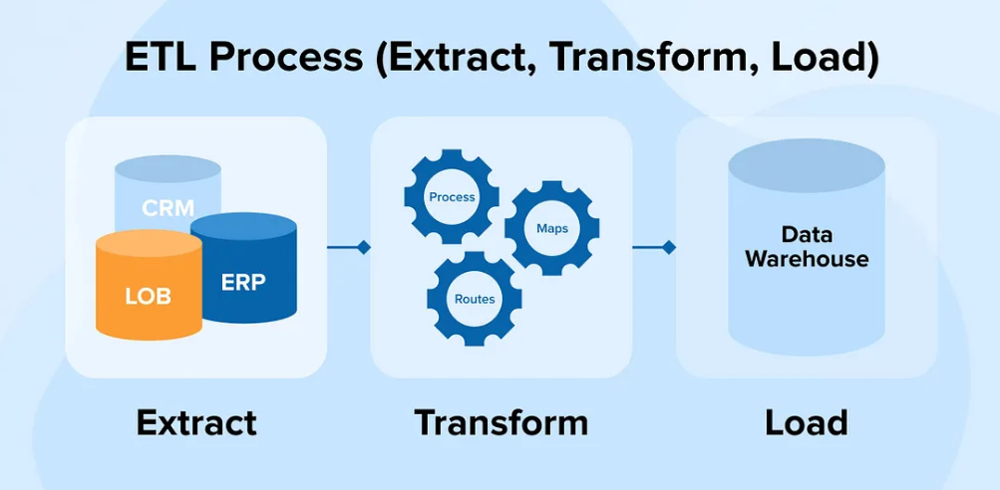
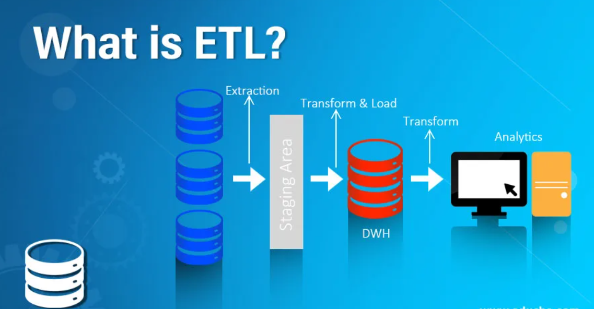
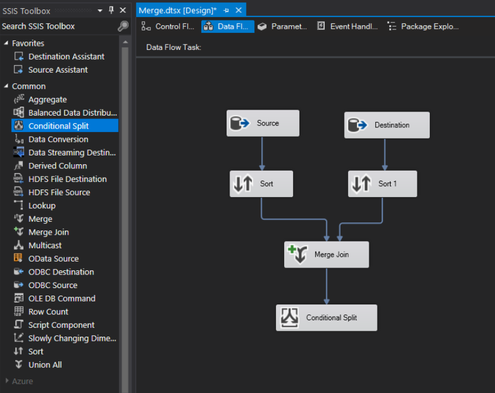

In this project, I developed an ETL pipeline using Python to seamlessly transfer data from several MongoDB collections to a SQL Server database.
The process involves extracting data from various MongoDB collections, handling nested structures by flattening them, transforming the data into SQL-compatible formats, and loading the cleaned
and structured data into the SQL Server.
This automation ensures efficient data migration and transformation, leveraging Prefect for workflow orchestration and ensuring that complex data engineering tasks are executed reliably and repeatably.
The use of Python libraries such as Pandas, SQLAlchemy, and PyMongo underscores the project's robust and scalable approach to managing large datasets.

In this project, I developed an automated ETL pipeline using PowerShell to efficiently transfer data from an SFTP server
to a SQL Server database. The process begins by connecting to the SFTP server, downloading the specified CSV files,
and transforming the data for compatibility with SQL Server. Each CSV file is then imported into a local directory, cleaned,
and bulk inserted into a designated SQL Server table. This automation ensures a seamless and efficient data transfer process,
leveraging PowerShell's scripting capabilities to handle complex data engineering tasks and maintain data integrity across the pipeline.
This ETL solution is designed to support daily data updates and optimize data management workflows for enhanced business intelligence and decision-making.

In this project, I automated an ETL pipeline using PowerShell to efficiently extract data from a SQL Server database
and load into a CSV file. The process involves connecting to the SQL Server, executing predefined queries to retrieve data
from specific tables, and exporting the results to CSV files located in a specified directory.
By leveraging PowerShell's scripting capabilities, this solution ensures a seamless and automated data extraction
and transformation process, making the data readily available for further analysis and reporting.

Welcome to the SSIS ETL Packages repository! This repository contains a collection of SQL Server Integration Services (SSIS) packages
that I've developed for various data integration and transformation tasks. Each package is designed to handle specific
ETL (Extract, Transform, Load) operations, providing robust and scalable solutions for data movement, transformation,
and management across different systems
In this project, we designed and implemented an automated ETL pipeline to monitor a product prices on Amazon.
The web scraper extracts data such as product names, current prices, and brand every 24 hours.
The data is then transformed to ensure consistency and accuracy before being loaded into a flat file or a database
for further analysis. Additionally, we integrated a notification system that triggers an email alert
when the price of a monitored product falls below a specified threshold.
This project showcases practical application of data engineering principles, including web scraping,
data extraction, transformation processes, automated data loading, and real-time alerting,
making it invaluable for scenarios like Black Friday sales.
In this project, we took raw housing data and performed extensive data cleaning and transformation in MySQL Server to make it more suitable for analysis.
The process involved extracting the data, identifying and handling missing values, correcting data inconsistencies,
and standardizing data formats. These steps ensured high-quality, reliable data for downstream analytical tasks.